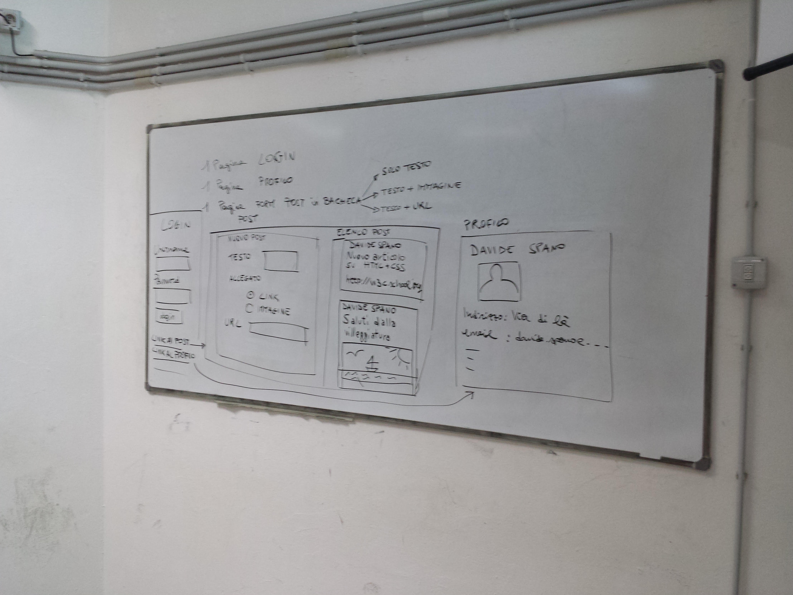

Prima esercitazione
Esercizio su html
Sviluppare tre pagine HTML che rappresentino lo scheletro dei contenuti per le seguenti funzionalità del nostro social network ridotto:
- Login
- Form di inserimento di un post e lettura dei post degli amici
- Visualizzazione del profilo di un amico (mettete preferibilmente una vostra foto
Le pagine devono essere simili alla foto che vi allego (non fate caso alle colonne)
Esercizio su css
Prendere almeno una delle tre pagine ed impostare un layout a due o tre colonne come visto a lezione.
Impostare gli stili di visualizzazione principali:
- Tipologia di carattere
- Colore di sfondo per le varie parti della pagina
- Allineamento e colori degli elementi di input
- Colore di sfondo diverso che identifichi i post (prendete esempio da Facebook